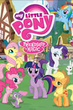
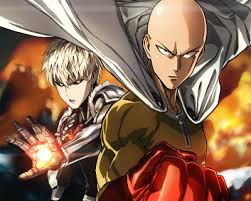

Biography Of Clinton Patrick Johnson
Who Am I?
By Clinton Patrick Johnson
A Little About Myself
My name is Clinton or Clint if you prefer to call me that. I am 33 about to turn 34 in a few months. I am an easy going person and I am very open minded. Not much really bothers me and I love many things. I am currently going to school to become a "Software Engineer" which is a very new and exciting path for me. I have always had an interest in video games and everything about them. I eventually want to become a game programmer but as for right now I want to learn as much as I can about the different programs I will be using in my field.
Likes
Here are some of my interests

- My Little Pony
- My Favorite Character is Twilight Sparkle.
- My Favorite Episode is 100.
- I have a huge collection.
- A project I want to become involved with is a Fallout Equestria.

- Video Games
- I love all game types.
- My favorite game genre are RPG's.
- My favorite game is Final Fantasy 7.

- Board Games
- I love all board games except for risk.
- I enjoy the games that are more out there and are not part of the main stream games.
- I really love playing D&D, Pathfinder and other games like them.
- I also have a good selection of board games and also have Ponyfinder books if anyone is interested in them.

- Anime
- I enjoy all types of anime.
- My favorite genre is action.
- My favorite anime of all time is "One Punch Man"
To see other projects that I am working on, please check for my profile StealthMcCloud on Github.
You can contact me through my e-mail if you have any questions at dragoon1246224@gmail.com